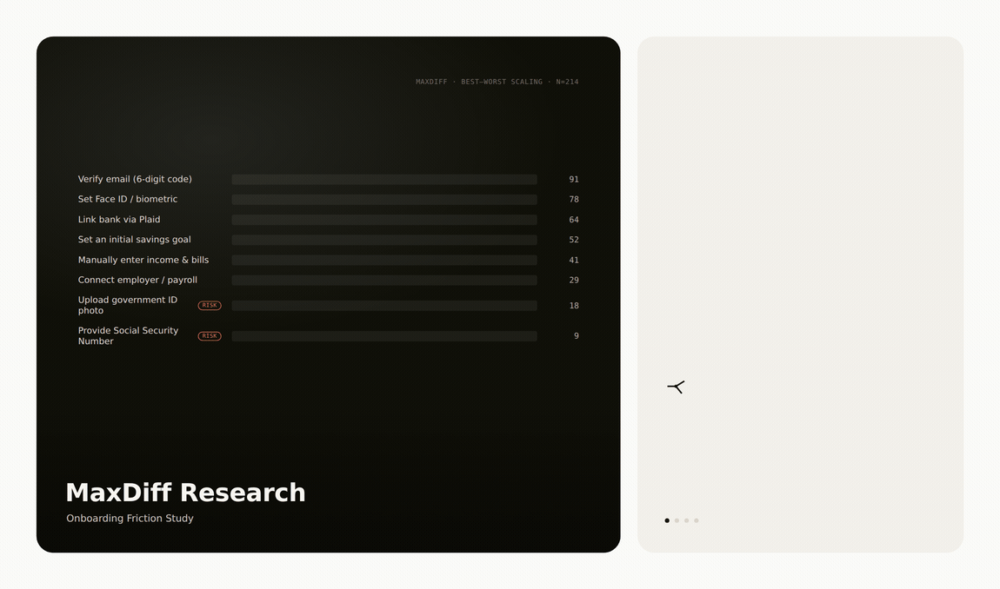
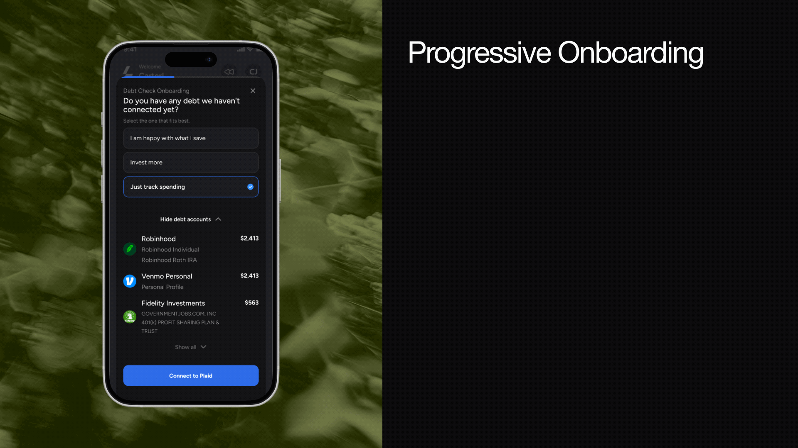
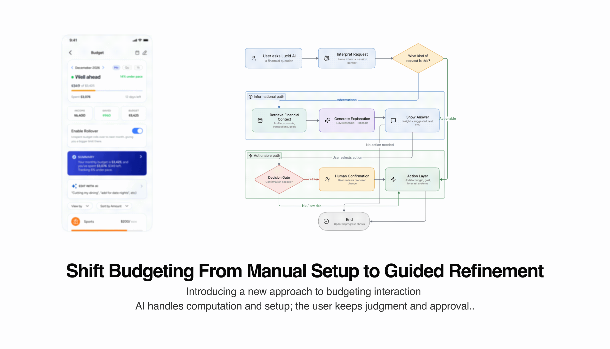
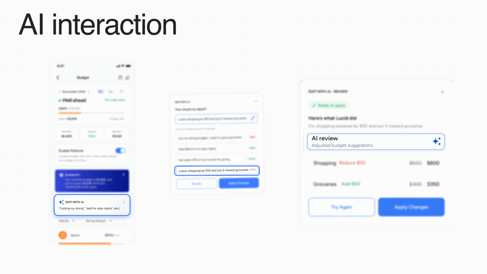
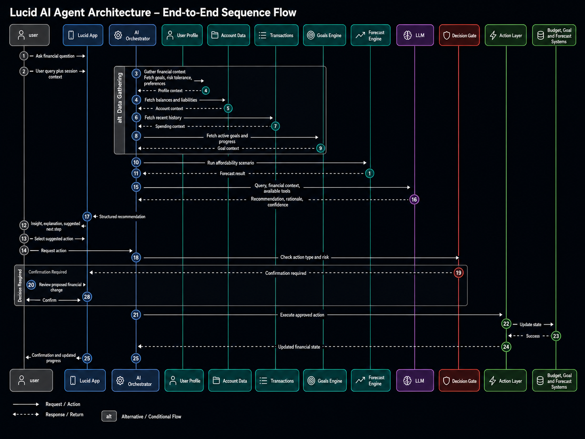
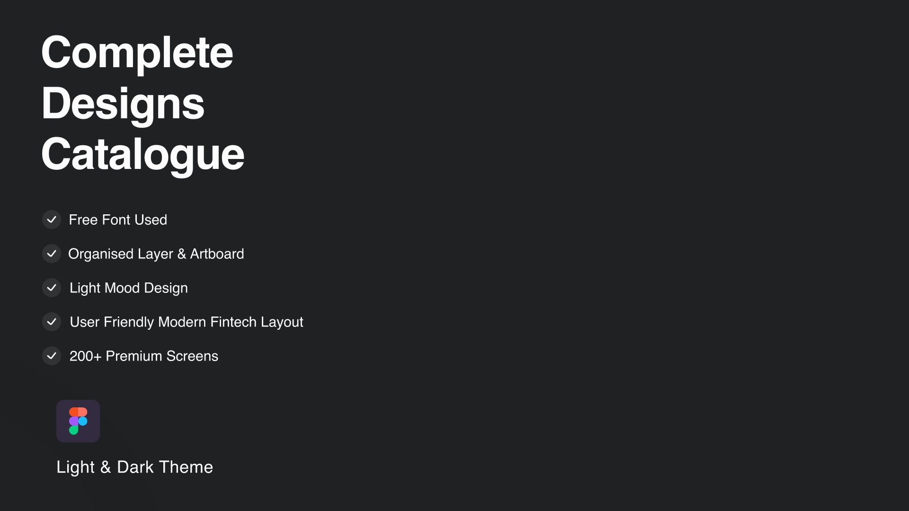
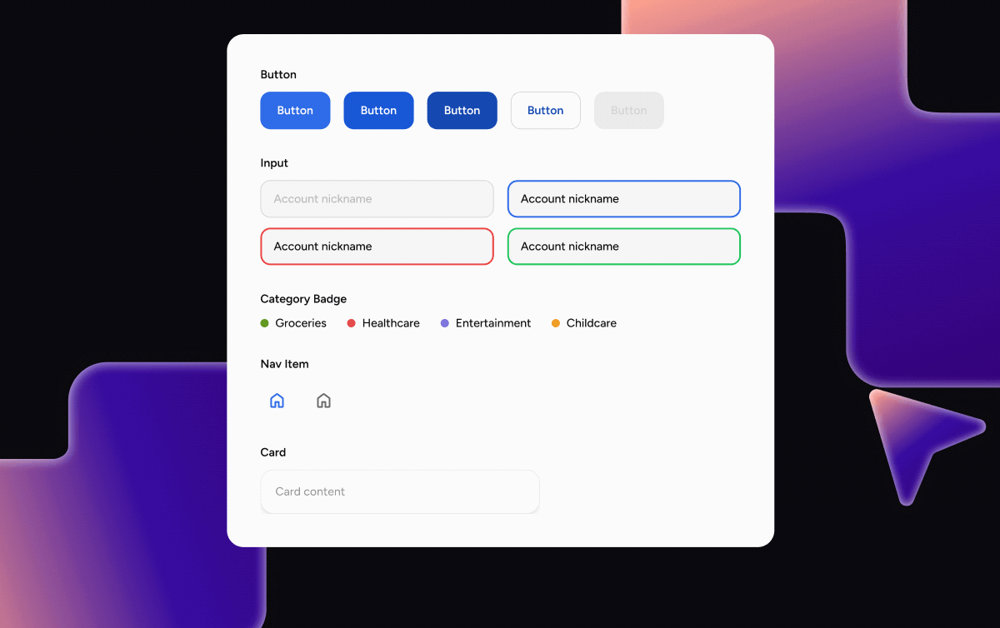

Designing the Product Before Designing the Screens
Lucid had every ingredient of a powerful financial product. It didn't yet have a shape.
Lucid had the ingredients of a powerful financial product — connected accounts, AI insights, forecasting, budgeting, and investment tools — but the experience was fragmented across features and user states.
My first challenge was not visual design. It was defining how the product should behave as one coherent system.
I mapped the relationship between user goals, financial data, AI capabilities, navigation, and engineering constraints to identify the product's core experience model.
Key question: How might Lucid help users understand their financial state, decide what to do next, and act without losing control to automation?
Using Preference Research to Decide What Deserved Attention
Guidance vs. control: users wanted help deciding, not a system that decided for them.
Rather than treating every financial feature as equally important, I used MaxDiff and Conjoint analysis to understand what users valued most and what tradeoffs they were willing to make.
The research helped distinguish between features that sounded useful and experiences users perceived as meaningfully valuable.
A key theme emerged around the relationship between guidance and control: users wanted help making financial decisions, but not at the cost of understanding or agency.
Design implication: This pushed budgeting toward a stronger intervention point — a place where Lucid could combine data, guidance, and user-controlled action.

"Users wanted help making financial decisions — not at the cost of understanding or agency."
Turning a Feature List Into One Product
Navigation should reflect the user's financial mental model, not the internal feature structure.
Lucid had multiple major areas — onboarding, Home, Spend, Invest, Future, AI, subscriptions, and settings — with dependencies across account connection, financial data, and user state.
I created an end-to-end user-flow architecture to define how users entered the product, moved between core tabs, completed key tasks, and returned to their financial overview.
This became the shared map for design and engineering.
Design principle: Navigation should reflect the user's financial mental model, not the internal feature structure.
Reduce Setup Before Asking for Commitment
Authenticate → Connect → Establish baseline → Enter Lucid → Deepen context when needed.
The original onboarding asked users for detailed financial decisions before they had experienced enough value to understand why they mattered.
I reorganized the flow so users first provide only what Lucid needs to establish a useful financial baseline. Additional questions appear later within Spend, Invest, Debt, or Future when that context becomes relevant.
Why: Faster time-to-value, lower up-front cognitive load, and a financial profile that becomes richer over time.
HCI: Progressive disclosure · Contextual onboarding · Just-in-time information collection

Start Budgeting From Reality, Not a Blank Canvas
Financial history → Suggested plan → Review → Adjust → Create budget.
Creating a budget from scratch forces users to estimate categories, remember spending patterns, and make several decisions at once.
Because Lucid already had connected financial data, I designed budget creation around the user's existing behavior.
Lucid could use income, recurring expenses, and category history to suggest a starting allocation. The user would review, adjust, and confirm rather than build every category manually.
Core journey: Financial history → Suggested plan → Review → Adjust → Create budget
Design principle: Let the system do the computational work while the user retains judgment.

Turn Natural Language Into a Financial Action
"Cut my dining budget by $100." Intent → Context → Calculation → Proposed change.
Once a budget existed, I explored whether users should have to navigate back through category controls every time they wanted to make a simple change.
Instead, Lucid could interpret a request such as: "Cut my dining budget by $100."
The AI identifies the relevant category, checks the current budget, calculates the impact, and prepares the change.
AI interaction: Intent → Context → Calculation → Proposed change
Example — Dining: $500 → $400. Impact: +$100 available toward savings or another goal.

AI Could Recommend the Change. It Couldn't Quietly Make It.
AI proposes → explains → user reviews → user confirms → system executes.
Natural-language actions reduce interaction cost, but they can also hide what the system is doing.
For financial state-changing actions, I introduced a confirmation boundary. Lucid presents: what will change, the current state, the proposed state, and the expected impact.
Only after the user confirms does the system apply the change.
Interaction model: AI proposes → explains → user reviews → user confirms → system executes
HCI: Human-in-the-loop · Error prevention · Reversibility · Trust calibration

"The AI could recommend the change. It couldn't quietly make it."
One Budget Change Should Update the Whole Financial Picture
Financial actions as shared product state, not screen-level changes.
The budget interaction was not designed as an isolated AI feature.
A change to Dining could influence: spending progress, available cash, savings goals, future projections, AI recommendations, and later weekly financial feedback.
I treated financial actions as shared product state rather than screen-level changes.
Why: This makes Lucid behave like one financial system instead of multiple dashboards with disconnected data.

Scaling the Decisions, Not Just the Screens
Tokens → primitives → components → patterns → product screens.
As Lucid expanded beyond 200 screens and states, maintaining consistency manually became a product risk.
I created a shared system spanning light and dark themes, navigation, financial cards, forms, AI states, feedback patterns, empty states, errors, and reusable interaction components.
The goal was not simply visual consistency. It was to encode recurring product decisions into components engineers could implement repeatedly.
Outcome: The shared system reduced design-to-engineering handoff time by approximately 40%.

"A design system isn't a style guide. It's a shared language between designers and engineers."
Designing the Relationship Between AI and Financial Control
Trust in financial AI doesn't come from the AI appearing autonomous.
Lucid evolved from a fragmented set of financial features into a more coherent product system built around interpretation, action, and user control.
The work spanned research, information architecture, interaction design, AI behavior, design systems, and close collaboration with engineering.
Outcomes:
200+ product screens and states · end-to-end navigation architecture · research-informed budgeting experience · conversational financial editing · human-controlled AI action model · light and dark design system · ~40% faster design-to-engineering handoff · progression from alpha toward production.
Reflection: The most important lesson was that trust in financial AI does not come from making the AI appear autonomous. It comes from making its behavior understandable, inspectable, and controllable.
"The opportunity wasn't to add a chatbot to finance. It was to design how financial data, AI judgment, and human agency work together."